Show the Code
library(tidyverse)
library(lubridate)
library(gt)
library(gtExtras)Ayomide Akinwande
May 17, 2023
This report present an analysis of the delivery performance within an online marketplace for a specific period in 2018, spanning from January to August. The analysis will primarily focus on the various stages involved in the delivery process, specifically examining the duration between the time an order was placed, its approval, the transition to the carrier, and ultimately reaching the final customers.
It is important to note that the analysis encompasses a duration of only 8 months in 2018, excluding the incomplete data for the month of September and October. Due to certain data limitations, the analysis for September and October lacks complete information for all its days. However, the report aims to provide valuable data and [drawing meaningful conclusion for the preceding months].
Understanding the efficiency and effectiveness of the delivery process is crucial for any online marketplace. Customer’s satisfaction and loyalty heavily rely on the timely and reliable delivery of their orders. Therefore, this report aims to shed light on the delivery performance, offering key observations, trends, and potential areas for improvement. Without further ado, let us delve into the delivery analysis.
csv_name <- c(
"order_items",
"orders",
"product_category_name",
"products",
"sellers"
)
all_datasets <- map(
csv_name, \(table) read_csv(glue::glue("Data/olist_{table}_dataset.csv"))
)
names(all_datasets) <- csv_name
orders <- all_datasets$orders
order_items <- all_datasets$order_items
products <- all_datasets$products
product_category_name <- all_datasets$product_category_name
sellers <- all_datasets$sellers
rm(all_datasets)
bz_state_name <- read_csv("Data/brazil-state-name.csv")period_levels <- c("minutes", "hours", "days", "weeks")
colr <- list(
title = "#343A40",
line = "#495057",
ax_title = "#6C757D",
bar = "#4A4E69",
legend = "#46494C"
)
custom_theme <- function(...) {
ggplot2::theme_minimal() +
ggplot2::theme(plot.title = element_text(colour = colr$title),
axis.title = element_text(color = colr$ax_title),
legend.title = element_text(color = colr$legend),
legend.text = element_text(color = colr$legend),
...)
}temp <- orders |>
filter(!is.na(order_delivered_customer_date)) |>
select(order_id, order_delivered_customer_date) |>
mutate(day = day(order_delivered_customer_date),
week_day = wday(order_delivered_customer_date, label = TRUE),
month = month(order_delivered_customer_date, label = TRUE),
day_year = yday(order_delivered_customer_date))
temp |>
group_by(date = date(order_delivered_customer_date)) |>
summarise(count = n()) |>
ggplot(aes(x = date, y = count, group = 1)) +
geom_line(color = colr$line) +
labs(x = NULL, y = "Count", title = "Number of Orders Supplied to Customers") +
scale_x_date(date_breaks = "1 month", date_labels = "%b") +
custom_theme()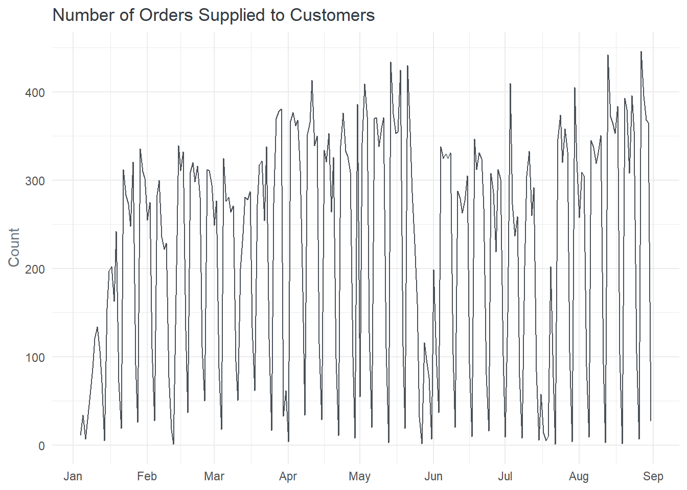
The trend plot analysis reveals significant variability in the number of deliveries made each day throughout the selected period. This indicate that there were fluctuations in the order volume with some days witnessing a high number of deliveries while others had comparatively lower activity. This variability also suggests the influence of various factors such as customer demand, marketing campaigns, seasonal trends, or external events that impacted the order on a daily basis. The analysis also identifies specific dates that stand out in terms of number of orders delivered. The largest delivery day occurred on August 27th, on the other hand the analysis highlight two days, namely February 12th and July 22nd, with the lowest number of orders supplied. Interestingly, these days recorded only a single order being fulfilled. The low activity in these days could be an indication of various factors such as low customer demand, seasonality or other external factors affecting order placement.
temp |>
summarise(count = n(), .by = week_day) |>
mutate(percentage = proportions(count)*100) |>
ggplot(aes(x = week_day, y = count)) +
geom_col(fill = colr$bar) +
scale_y_continuous(labels = scales::comma_format()) +
labs(x = NULL, y = "Count", title = "Number of Supplied Order by Day of the Week") +
custom_theme()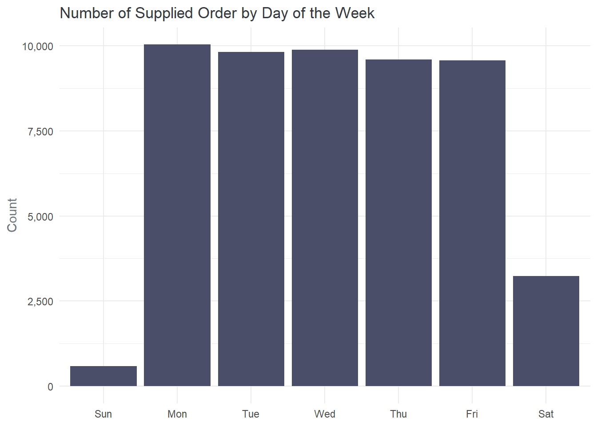
The above plot indicates that a majority of the orders supplied to customers, specifically 92.7%, took place on weekdays, while the remaining 7.3% occurred on weekends. This distribution indicate more customers received their orders during weekdays compared to weekends. Analyzing the distribution of delivery within weekdays, the plot reveals interesting patterns. Among all the weekdays, Mondays stand as the day with the highest number of orders received by customers, accounting for 19% of the total. On the other hand, the analysis highlights that Sundays had the lowest number of orders received, with only a handful of orders (593) being fulfilled. suggest This indicates relatively lower customer engagement on weekends especially on Sundays. These insights can be used to align staffing levels, logistics, and customer support accordingly, ensuring timely and reliable deliveries while meeting customer expectations
temp |>
summarise(count = n(), .by = month) |>
mutate(percentage = proportions(count)*100) |>
ggplot(aes(x = month, y = count, group = 1)) +
geom_line(color = colr$line, linewidth = 1) +
scale_y_continuous(labels = scales::comma_format()) +
labs(x = NULL, y = "Count", title = "Number of Supplied Order by Month") +
custom_theme()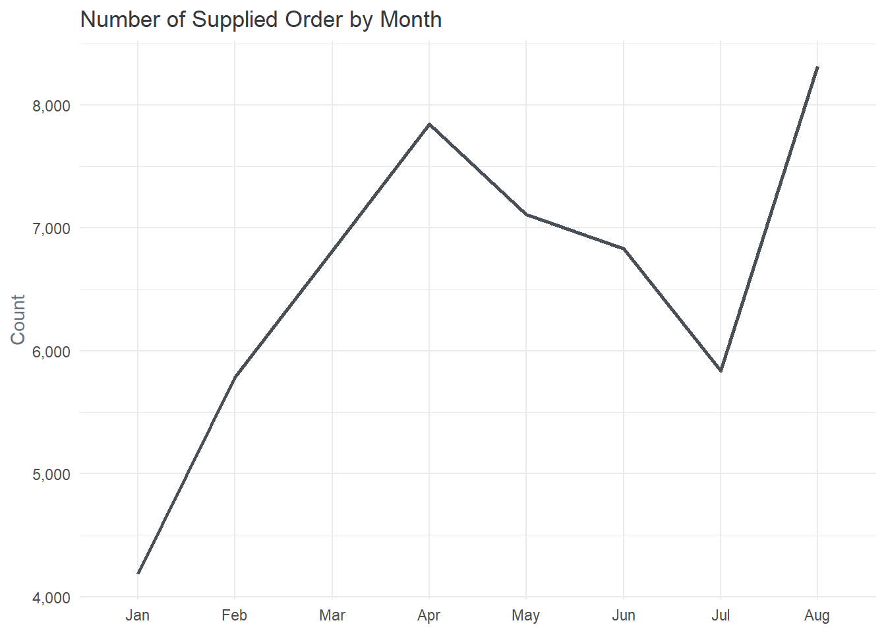
The analysis of the number of orders received by month reveals several key trends. In the first quarter of 2018, there was a steady increase in the number of deliveries, indicating a positive growth trajectory. This upward trend continued until April, which emerged as the second-best month in terms of the number of orders delivered. However, the second quarter witnessed a decline in delivery volume. This decline persisted throughout the quarter, with a notable dip in July. Interestingly, there was a significant upturn in delivery performance during August. This month witnessed a drastic increase in the number of orders delivered, signaling a substantial improvement compared to the preceding months.The analysis indicates that August accounted for approximately 15.8% of the total orders delivered during the year, making it the month with the most product deliveries. This high delivery volume suggests increased customer activity, potentially due to various factors such as seasonal sales, promotional campaigns, or other market influences driving demand.
Understanding the dynamics of August and the factors contributing to its exceptional delivery performance can provide valuable insight. These insights can inform future strategies, such as capitalizing on peak demand periods, optimizing logistics operations, and planning marketing initiatives to replicate or even surpass the success achieved during August.
orders |>
count(order_status, sort = TRUE, name = "count") |>
mutate(percentage = round(proportions(count)*100, 2),
order_status = str_to_title(order_status)) |>
gt() |>
cols_label(order_status = "Status",
count = md("*No.* Orders"),
percentage = "Percentage") |>
tab_header("Order Volume by Order Status") |>
fmt_integer(columns = count) |>
tab_style(style = cell_text("#52B788", weight = "bold"),
locations = cells_body(order_status, 1)) |>
tab_style(style = cell_text("#FFC300", weight = "bold"),
locations = cells_body(order_status, 2)) |>
tab_style(style = cell_text("#D90429", weight = "bold"),
locations = cells_body(order_status, c(3, 4)))| Order Volume by Order Status | ||
| Status | No. Orders | Percentage |
|---|---|---|
| Delivered | 52,724 | 97.76 |
| Shipped | 567 | 1.05 |
| Canceled | 315 | 0.58 |
| Unavailable | 145 | 0.27 |
| Invoiced | 121 | 0.22 |
| Processing | 59 | 0.11 |
| Created | 1 | 0.00 |
The analysis indicates that a significant majority, specifically 97.8%, of the orders where delivered successfully. Successful delivery implies that the orders were processed, shipped, and received by the customers. This high percentage reflects the effectiveness and efficiency of the delivery process.
A small percentage, approximately 1.05%, of the orders (567 orders) were still in transit at the time of the analysis. These orders indicate that they have been shipped or dispatched but have not yet reached the final customers.
The analysis also reveals that a portion of the orders experienced cancellation or unavailability. Approximately 0.58% of all orders (315 orders) were canceled, indicating that these orders were requested to be canceled by either the customers or the seller. The reasons for cancellation can vary, including customer changes of mind, product unavailability, or other logistical or operational factors.
OSL <- c("delivered", "shipped", "invoiced", "processing", "canceled", "unavailable")
orders |>
mutate(order_month = month(order_purchase_timestamp, label = TRUE)) |>
group_by(order_month, order_status) |>
summarise(count = n()) |>
mutate(total_order = sum(count),
order_status = factor(order_status, levels = OSL),
order_status = str_to_title(order_status)) |>
filter(order_status != "created") |>
ggplot(aes(x = order_month, y = count)) +
geom_line(aes(group = 1), color = colr$line, linewidth = 0.7) +
facet_wrap(vars(order_status), ncol = 2, scales = "free_y") +
scale_y_continuous(labels = scales::comma_format()) +
labs(x = NULL, y = "Count", title = "Order Status and Purchase Month") +
custom_theme()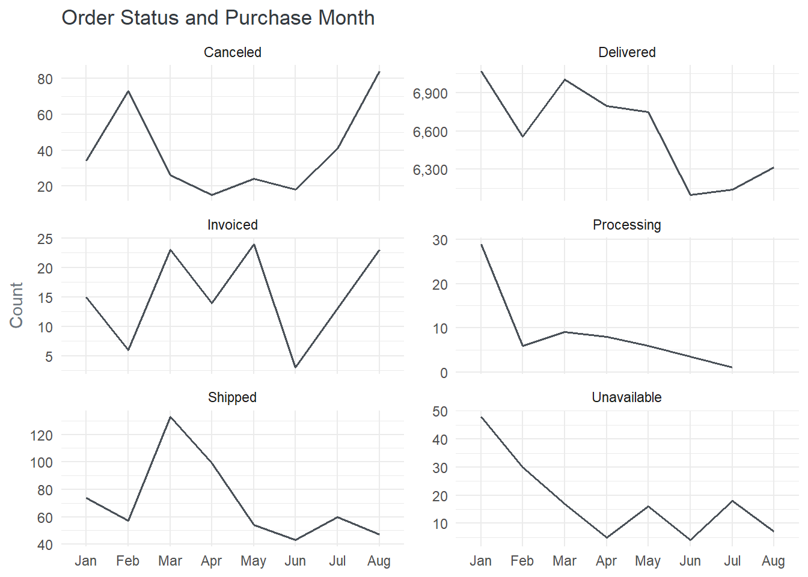
The analysis of the order status across all available months indicates that there was a steady decline in the number of orders shipped after March, with a few exceptions. Specifically, the number of orders shipped decreased steadily from April to June. However, in July, there was an increase of 3% in the total number of shipped orders. The highest cancellation occurred in August which saw a 51% increase in canceled orders. Both processing and delivered order kept declining after March. **********
clean_duration <- function(string) {
stringr::str_extract(string, "\\((.*?)\\)") |>
stringr::str_replace("~", "") |>
stringr::str_replace("\\(", "") |>
stringr::str_replace("\\)", "")
}
temp <- orders |>
select(order_purchase_timestamp, order_approved_at) |>
mutate(approval_diff = as.numeric(order_approved_at - order_purchase_timestamp),
duration = dminutes(x = approval_diff) |> clean_duration()) |>
separate(col = duration, into = c("d_value", "period"), sep = " ", remove = FALSE) |>
mutate(d_value = as.numeric(d_value),
period = factor(period, levels = period_levels))temp |>
count(period, sort = FALSE, name = "count") |>
mutate(percentage = round(proportions(count)*100, 2),
period = str_to_title(period),
count_label = count) |>
gt() |>
cols_label(period = md("*Unite* of Time"),
count = md("*No.* of Order"),
percentage = "Percentage",
count_label = " ") |>
fmt_integer(columns = count) |>
sub_missing() |>
tab_style(style = cell_text(weight = "bold", color = "#6C757D"),
locations = cells_body(columns = period)) |>
tab_style(cell_text(size = "small", weight = "lighter"),
cells_body(rows = 5)) |>
gt_plt_bar(column = count_label, color = colr$bar)| Unite of Time | No. of Order | Percentage | |
|---|---|---|---|
| Minutes | 34,144 | 63.31 | |
| Hours | 10,628 | 19.71 | |
| Days | 9,068 | 16.81 | |
| Weeks | 29 | 0.05 | |
| — | 63 | 0.12 |
A significant majority, approximately 63.31%, of the orders were approved within minutes of order initiation. This high percentage suggests an efficient system in place to review and approve orders swiftly, enhancing customer satisfaction and reducing potential delays. On the other end of the spectrum, a small percentage of orders (0.05%) took up to a week to be approved. This indicates that a very limited number of orders experienced delays in the approval process. The analysis highlights that there are more orders approved within hours (19.7%) compared to those that take days (16.8%).
The presence of orders that take days for approval suggests that certain factors, such as order complexity, stock availability, or manual review processes, may contribute to the longer approval time for a subset of orders
orders |>
filter(!is.na(order_approved_at)) |>
mutate(month = month(order_purchase_timestamp, label = TRUE)) |>
summarise(count = n(), .by = month) |>
ggplot(aes(x = month, y = count)) +
geom_col(fill = colr$bar) +
geom_text(aes(label = scales::comma(count), y = 300),
hjust = 0.5,
color = "#ADB5BD",
size = 5) +
labs(x = NULL, y = NULL, title = "Number of Transactions by Month") +
custom_theme(axis.text.y = element_blank())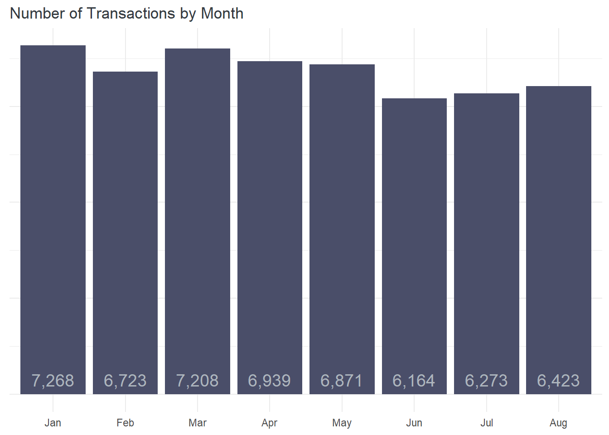
temp |>
mutate(month = month(order_purchase_timestamp, label = TRUE)) |>
group_by(month) |>
summarise(n_order = n(),
median = median(approval_diff, na.rm = TRUE)) |>
mutate(duration = dminutes(x = median) |> clean_duration()) |>
separate(col = duration, into = c("d_value", "period"), sep = " ", remove = FALSE) |>
filter(!is.na(median)) |>
ggplot(aes(x = month, y = d_value)) +
geom_col(fill = colr$bar) +
labs(x = NULL,
y = "Minutes",
title = "Median Duration to Approved Orders",
fill = "Period") +
custom_theme()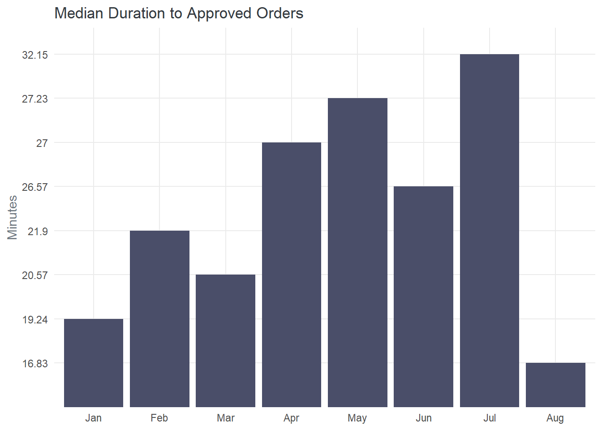
July stands out as the month with the highest median approval duration, approximately 32.2 minutes. This indicates that, on average, it took slightly longer for orders to be approved in July compared to other months. Also August emerges as the month with the best order approval duration, with an approximate median of 16.83 minutes which indicates that, on average, orders were approved relatively quickly. Interestingly, despite experiencing higher transaction volumes in January and March, these months had median approval duration of 19.2 and 20.6 minutes, respectively. This indicates that even though more orders were being processed during these months, the median approval duration on average where faster than other months except for August.
By identifying the factors contributing to longer approval duration and leveraging best practices from months with shorter duration, approval process can be optimize to ensure timely order processing for improved customer satisfaction.
temp <- orders |>
select(order_purchase_timestamp, order_approved_at, order_delivered_carrier_date) |>
mutate(
pur_carr_diff = as.numeric(order_delivered_carrier_date - order_purchase_timestamp),
pc_duration = dseconds(x = pur_carr_diff) |> clean_duration(),
appr_carr_diff = as.numeric(order_delivered_carrier_date - order_approved_at),
ac_duration = dseconds(x = appr_carr_diff) |> clean_duration(),
) |>
separate(col = pc_duration, into = c("pc_value", "pc_period"), sep = " ") |>
separate(col = ac_duration, into = c("ac_value", "ac_period"), sep = " ") |>
mutate(across(c(pc_value, ac_value), as.numeric),
across(c(pc_period, ac_period), \(col) factor(col, levels = period_levels)))temp |>
count(pc_period, name = "no_order") |>
mutate(percentage = proportions(no_order)*100,
pc_period = str_to_title(pc_period),
no_order_bar = no_order) |>
gt() |>
cols_label(pc_period = md("*Unite* of Time"),
no_order = md("*No.* of Order"),
percentage = "Percentage",
no_order_bar = " ") |>
fmt_number(columns = percentage) |>
fmt_integer(columns = no_order) |>
sub_missing() |>
tab_style(style = cell_text(weight = "bold", color = "#6C757D"),
locations = cells_body(columns = pc_period)) |>
tab_style(cell_text(size = "small", weight = "lighter"),
cells_body(rows = 5)) |>
gt_plt_bar(column = no_order_bar, color = colr$bar)| Unite of Time | No. of Order | Percentage | |
|---|---|---|---|
| Minutes | 290 | 0.54 | |
| Hours | 11,402 | 21.14 | |
| Days | 37,826 | 70.14 | |
| Weeks | 3,834 | 7.11 | |
| — | 580 | 1.08 |
The analysis indicates that majority of orders, approximately 70%, were delivered to the carrier within days which suggests that the majority of orders required more time for approval preparation, packaging, and coordination before they could be handed over to the carrier for transportation. Approximately 21.1% of the orders were delivered to the carrier within hours. This subset of orders represents a relatively faster delivery process, indicating that a portion of the orders was quickly approved, prepared and made ready for shipping. While a small percentage, approximately 0.5%, of the orders were delivered to the carrier within minute
temp |>
mutate(month = month(order_purchase_timestamp, label = TRUE)) |>
group_by(month) |>
summarise(no_order = n(),
pc_avg = mean(pur_carr_diff, na.rm = TRUE),
pc_median = median(pur_carr_diff, na.rm = TRUE)) |>
mutate(pc_duration = dseconds(x = pc_median) |> clean_duration()) |>
separate(col = pc_duration, into = c("pc_value", "pc_period"), sep = " ") |>
filter(!is.na(pc_value)) |>
ggplot(aes(x = month, y = pc_value, group = 1)) +
geom_line(color = colr$line, linewidth = 0.7) +
labs(x = NULL, y = "Days", title = "Median Duration of Product Delivered to Carrier") +
custom_theme()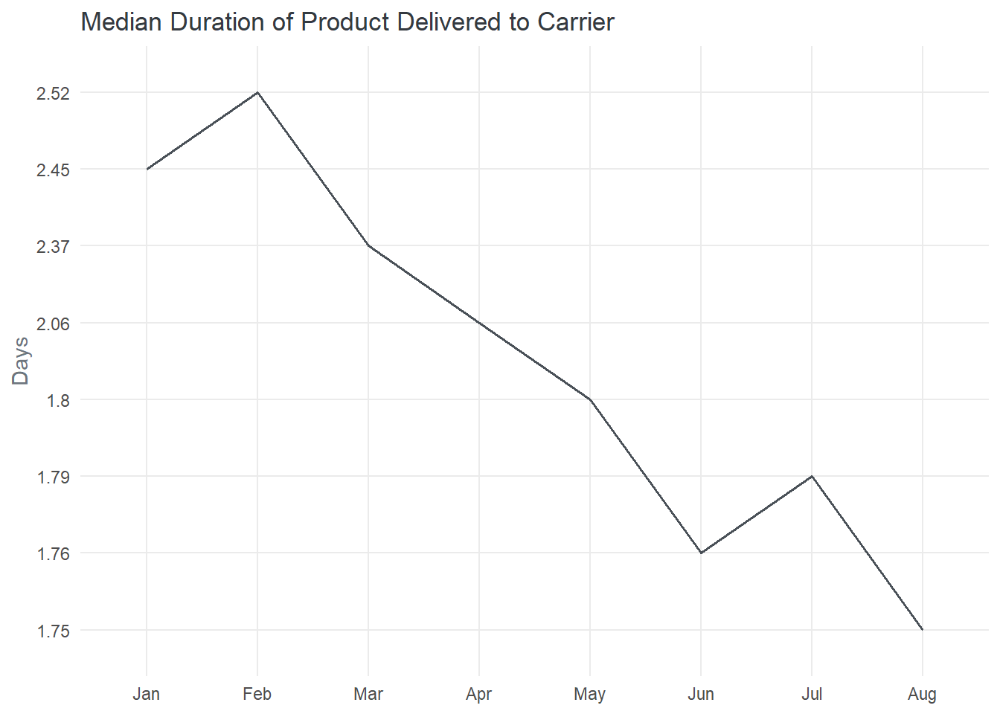
The analysis reveals a consistent decline in the median number of days for orders to move from sellers to carriers across all months. The decreasing median duration indicates a positive trend toward faster order handover and readiness for transportation. It also suggests an improvement in the efficiency of this phase of the delivery process over time. February stands out as the month with the highest median duration for orders to reach carriers from sellers, with a value of 2.52 days. While August recorded the lowest median duration.
temp |>
select(order_purchase_timestamp, ac_value, ac_period) |>
mutate(app_point = if_else(ac_value <= 0, "Late", "Early")) |>
count(app_point, sort = TRUE, name = "count") |>
mutate(percentage = proportions(count)*100,
count_label = count) |>
gt() |>
cols_label(app_point = "Approval Term",
count = md("*No.* Order"),
percentage = "Percentage",
count_label = " ") |>
fmt_number(columns = percentage) |>
fmt_integer(columns = count) |>
sub_missing() |>
tab_style(style = cell_text(weight = "bold", color = "#6C757D"),
locations = cells_body(columns = app_point)) |>
tab_style(cell_text(size = "small", weight = "lighter"),
cells_body(rows = 3)) |>
gt_plt_bar(column = count_label, color = colr$bar)| Approval Term | No. Order | Percentage | |
|---|---|---|---|
| Early | 52,084 | 96.57 | |
| Late | 1,272 | 2.36 | |
| — | 576 | 1.07 |
temp |>
mutate(Approval = if_else(ac_value <= 0, "After", "Before")) |>
summarise(n_order = n(), .by = c(ac_period, Approval)) |>
mutate(percentage = proportions(n_order)*100,
n_order_label = n_order,
ac_period = str_to_title(ac_period)) |>
filter(!is.na(ac_period)) |>
group_by(Approval) |>
gt() |>
cols_label(ac_period = md("*Unite* of Time"),
n_order = md("*No.* of Order"),
percentage = "Percentage",
n_order_label = " ") |>
fmt_number(percentage) |>
fmt_integer(n_order) |>
gt_plt_bar(column = n_order_label, color = colr$bar) |>
tab_options(column_labels.font.size = 16,
row_group.background.color = "#FAFAFA",
row_group.font.size = 13)| Unite of Time | No. of Order | Percentage | |
|---|---|---|---|
| Before | |||
| Hours | 16,416 | 30.44 | |
| Days | 32,169 | 59.65 | |
| Weeks | 3,201 | 5.94 | |
| Minutes | 298 | 0.55 | |
| After | |||
| Days | 425 | 0.79 | |
| Hours | 615 | 1.14 | |
| Minutes | 231 | 0.43 | |
| Weeks | 1 | 0.00 | |
There were instances where some orders were delivered to the carrier before they were officially approved. This may be a potential breakdown in the order processing system, where orders may have been dispatched to the carrier prematurely, leading to a mismatch between the approval status and the actual delivery process. Looking at the numbers 1,274 orders, accounting for approximately 2.4% of the total, were approved after they had already been delivered to the carrier. Identifying the reasons behind this delay and implementing measures to streamline the approval process can help avoid such instances in the future.
Looking at the duration, 59.7% of orders took at least a day from the time of approval to the time they were delivered to the carriers. Additionally, 30.4% of orders had duration in hours from approval to delivery.
temp |>
select(order_purchase_timestamp, appr_carr_diff, ac_value, ac_period) |>
mutate(month = month(order_purchase_timestamp, label = TRUE),
approval = if_else(ac_value <= 0, "After Approval", "Before Approval")) |>
filter(!is.na(approval)) |>
summarise(avg = mean(appr_carr_diff, na.rm = TRUE),
median = median(appr_carr_diff, na.rm = TRUE),
.by = c(month, approval)) |>
mutate(duration = dseconds(x = median) |> clean_duration()) |>
separate(col = duration, into = c("value", "period"), sep = " ") |>
mutate(value = str_replace(value, "-", "")) |>
ggplot(aes(x = month, y = value, fill = period)) +
geom_col() +
facet_wrap(vars(factor(approval, levels = c("Before Approval", "After Approval"))),
ncol = 1,
scales = "free_y") +
labs(x = NULL, y = "Duration", title = "Duration of Orders From Approval to Carrier") +
scale_fill_manual(values = c("#BC4B51", "#5B8E7D", "#52B788"), name = "Period") +
custom_theme() 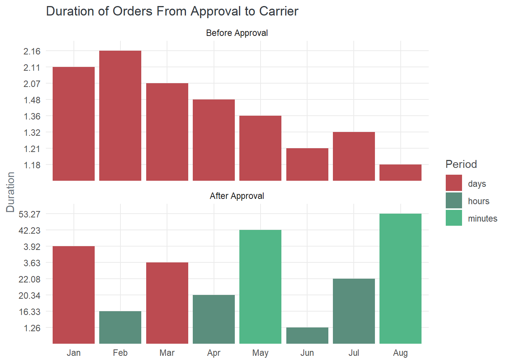
There was a positive decline in the duration it took for products to be delivered to the carrier after approval. This decline started from February and continued through to June. Factors contributing to this decline could include streamlined workflows, optimized logistics, enhanced coordination with carriers, and improved operational practices.
temp <- orders |>
select(order_purchase_timestamp,
order_delivered_carrier_date,
order_delivered_customer_date) |>
mutate(
pur_cus_diff = as.numeric(order_delivered_customer_date - order_purchase_timestamp),
pc_duration = duration(pur_cus_diff, "hours") |> clean_duration(),
carr_cus_diff = as.numeric(order_delivered_customer_date - order_delivered_carrier_date),
cc_duration = dseconds(x = carr_cus_diff) |> clean_duration(),
) |>
separate(col = pc_duration, into = c("pc_value", "pc_period"), sep = " ") |>
separate(col = cc_duration, into = c("cc_value", "cc_period"), sep = " ") |>
mutate(across(c(pc_value, cc_value), as.numeric),
across(c(pc_period, cc_period), \(col) factor(col, levels = period_levels))) temp |>
count(pc_period, name = "n_orders") |>
mutate(percentage = proportions(n_orders)*100,
pc_period = str_to_title(pc_period),
n_order_label = n_orders) |>
gt() |>
cols_label(pc_period = md("*Unit* of Time"),
n_orders = md("*No.* of Order"),
percentage = "Percentage",
n_order_label = " ") |>
tab_header("Duration of Delivery to Customers") |>
fmt_number(percentage) |>
fmt_integer(n_orders) |>
sub_missing() |>
tab_style(cell_text(size = "small", weight = "lighter"),
cells_body(rows = 4)) |>
gt_plt_bar(column = n_order_label, color = colr$bar)| Duration of Delivery to Customers | |||
| Unit of Time | No. of Order | Percentage | |
|---|---|---|---|
| Hours | 6 | 0.01 | |
| Days | 16,577 | 30.74 | |
| Weeks | 36,136 | 67.00 | |
| — | 1,213 | 2.25 | |
temp |>
mutate(month = month(order_purchase_timestamp, label = TRUE)) |>
group_by(month) |>
summarise(avg = mean(pur_cus_diff, na.rm = TRUE),
median = median(pur_cus_diff, na.rm = TRUE)) |>
mutate(duration = duration(median, "hours") |> clean_duration()) |>
separate(col = duration, into = c("value", "period"), sep = " ") |>
mutate(value = as.numeric(value)) |>
filter(!is.na(median)) |>
ggplot(aes(x = month, y = value, group = 1)) +
geom_line(color = colr$line) +
labs(x = NULL, y = "Weeks", title = "Median Duration of Receiving an Order") +
scale_y_continuous(breaks = seq(0, 3.0, 0.2)) +
custom_theme()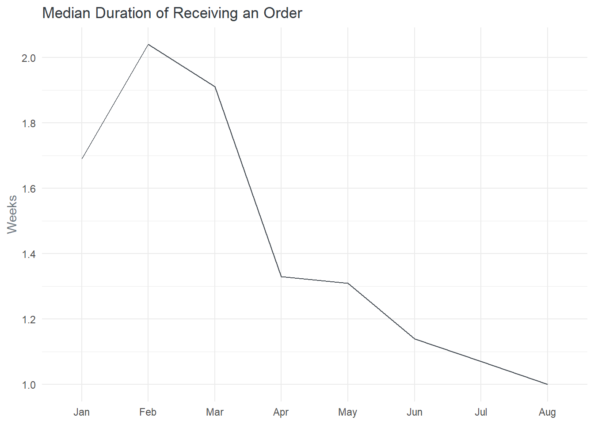
The analysis reveals a positive decline in the duration of order delivery to customers over each passing month. Given that approximately 67% of customers received their orders in at least a week, February had the highest median duration for order delivery, taking over two weeks. On the other hand, August had the lowest median duration for order delivery, taking approximately one week. This follows the same declining trend of the median delivery duration to carrier except for July when there was an increase.
temp |>
mutate(day = day(order_purchase_timestamp)) |>
group_by(day) |>
summarise(avg = mean(pur_cus_diff, na.rm = TRUE),
median = median(pur_cus_diff, na.rm = TRUE)) |>
mutate(duration = duration(median, "hours") |> clean_duration()) |>
separate(col = duration, into = c("value", "period"), sep = " ") |>
mutate(value = as.numeric(value)) |>
filter(!is.na(median)) |>
ggplot(aes(x = day, y = value, group = 1)) +
geom_line(color = colr$line) +
labs(x = "Day of the month",
y = "Weeks",
title = "Median Duration of Receiving an Order") +
scale_x_continuous(breaks = seq(1, 31, 2)) +
custom_theme()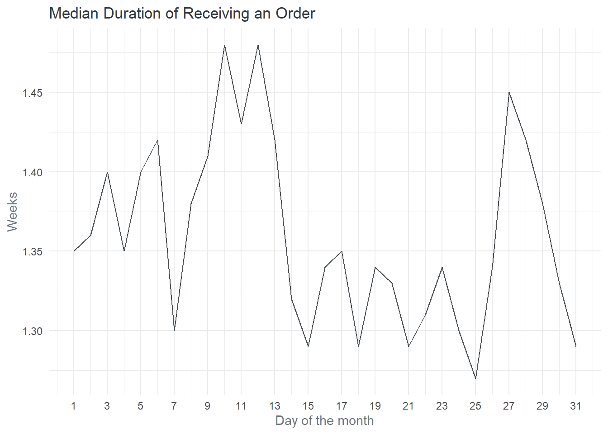
Certain days, such as the 25th, 15th, 18th, 21st, and 7th, recorded the lowest delivery duration. These days experienced shorter delivery times on average compared to other days of the month. On the other hand, specific days, such as the 10th, 12th, and 27th, recorded the highest delivery duration.
temp |>
count(cc_period, name = "n_orders") |>
mutate(percentage = proportions(n_orders)*100,
cc_period = str_to_title(cc_period),
n_order_label = n_orders) |>
gt() |>
cols_label(cc_period = md("*Unit* of Time"),
n_orders = md("*No.* of Order"),
percentage = "Percentage",
n_order_label = " ") |>
tab_header("Duration of Delivery from Carrier to Customer") |>
fmt_number(percentage) |>
fmt_integer(n_orders) |>
sub_missing() |>
tab_style(cell_text(size = "small", weight = "lighter"),
cells_body(rows = 4)) |>
gt_plt_bar(column = n_order_label, color = colr$bar)| Duration of Delivery from Carrier to Customer | |||
| Unit of Time | No. of Order | Percentage | |
|---|---|---|---|
| Hours | 1,313 | 2.43 | |
| Days | 25,795 | 47.83 | |
| Weeks | 25,607 | 47.48 | |
| — | 1,217 | 2.26 | |
temp |>
mutate(month = month(order_purchase_timestamp, label = TRUE)) |>
group_by(month) |>
summarise(avg = mean(carr_cus_diff, na.rm = TRUE),
median = median(carr_cus_diff, na.rm = TRUE)) |>
mutate(duration = duration(median, "seconds") |> clean_duration()) |>
separate(col = duration, into = c("value", "period"), sep = " ") |>
# mutate(value = as.numeric(value)) |>
filter(!is.na(median)) |>
ggplot(aes(x = month, y = value, fill = period)) +
geom_col() +
labs(x = NULL,
y = "Duration",
title = "Median Duration of Receiving an Order After Approval") +
scale_fill_manual(values = c("#5B8E7D", "#BC4B51"), name = "Unite of Time") +
custom_theme()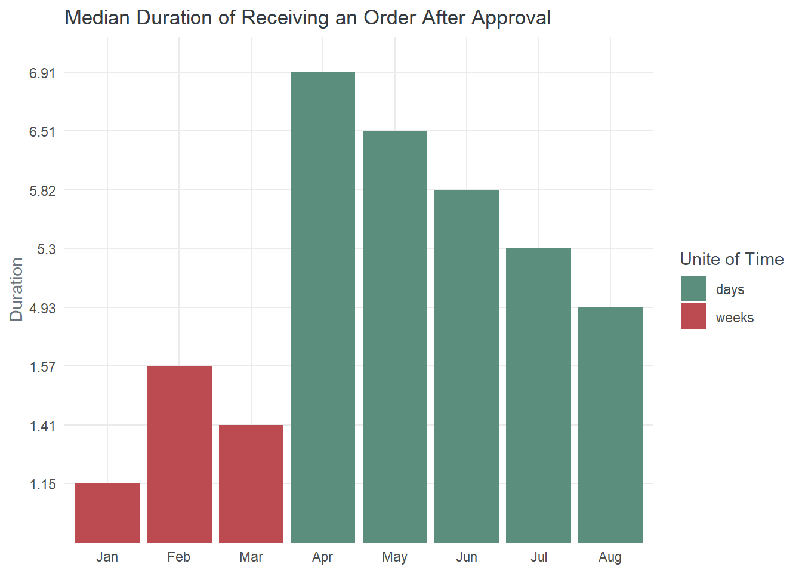
Majority of orders were delivered to customers after some days and weeks. Furthermore, a small percentage (approximately 2.4%) of orders were delivered to customers within hours. The analysis highlights that the first three months had median delivery duration of over a week. This aligns with the previous analysis, which identified February as having the highest median duration for order delivery. In contrast to the longer August had the lowest overall duration for order delivery, with just 5 days
temp <- orders |>
select(order_purchase_timestamp,
order_delivered_customer_date,
order_estimated_delivery_date) |>
mutate(
actual_diff = as.numeric(order_delivered_customer_date - order_purchase_timestamp),
a_duration = duration(actual_diff, "hours") |> clean_duration(),
estimate_diff = as.numeric(order_estimated_delivery_date - order_purchase_timestamp),
e_duration = duration(estimate_diff, "days") |> clean_duration(),
) |>
separate(col = a_duration, into = c("a_value", "a_period"), sep = " ") |>
separate(col = e_duration, into = c("e_value", "e_period"), sep = " ") |>
mutate(across(c(a_value, e_value), as.numeric),
across(c(a_period, e_period), \(col) factor(col, levels = period_levels))) temp |>
count(e_period, name = "n_order") |>
mutate(percentage = proportions(n_order)*100,
e_period = str_to_title(e_period),
n_order_label = n_order) |>
gt() |>
cols_label(e_period = md("*Unit* of Time"),
n_order = md("*No. Order*"),
percentage = "Percentage",
n_order_label = " ") |>
tab_header("Duration of Delivery Based on Estimated Date") |>
fmt_number(percentage) |>
fmt_integer(n_order) |>
gt_plt_bar(column = n_order_label, color = colr$bar)| Duration of Delivery Based on Estimated Date | |||
| Unit of Time | No. Order | Percentage | |
|---|---|---|---|
| Days | 1,300 | 2.41 | |
| Weeks | 52,632 | 97.59 | |
temp |>
mutate(month = month(order_purchase_timestamp, label = TRUE),
day = day(order_purchase_timestamp)) |>
group_by(month) |>
summarise(n_order = n(),
median_actual = median(actual_diff, na.rm = TRUE),
median_estimate = median(estimate_diff, na.rm = TRUE)) |>
mutate(actual_duration = duration(median_actual, "hours") |> clean_duration(),
estimate_duration = duration(median_estimate, "days") |> clean_duration()) |>
separate(col = actual_duration, into = c("Actual", "a_period"), sep = " ") |>
separate(col = estimate_duration, into = c("Estimated", "e_period"), sep = " ") |>
pivot_longer(cols = c(Actual, Estimated), names_to = "ae", values_to = "duration") |>
filter(!is.na(duration)) |>
ggplot(aes(x = month, y = duration, group = ae, color = ae)) +
geom_line() +
scale_color_manual(values = c("#118AB2", "#06D6A0"), name = " ") +
labs(x = NULL,
y = "Duration (Weeks)",
title = "Median Duration of Receiving an Order Based on the Actual & Estimate") +
custom_theme()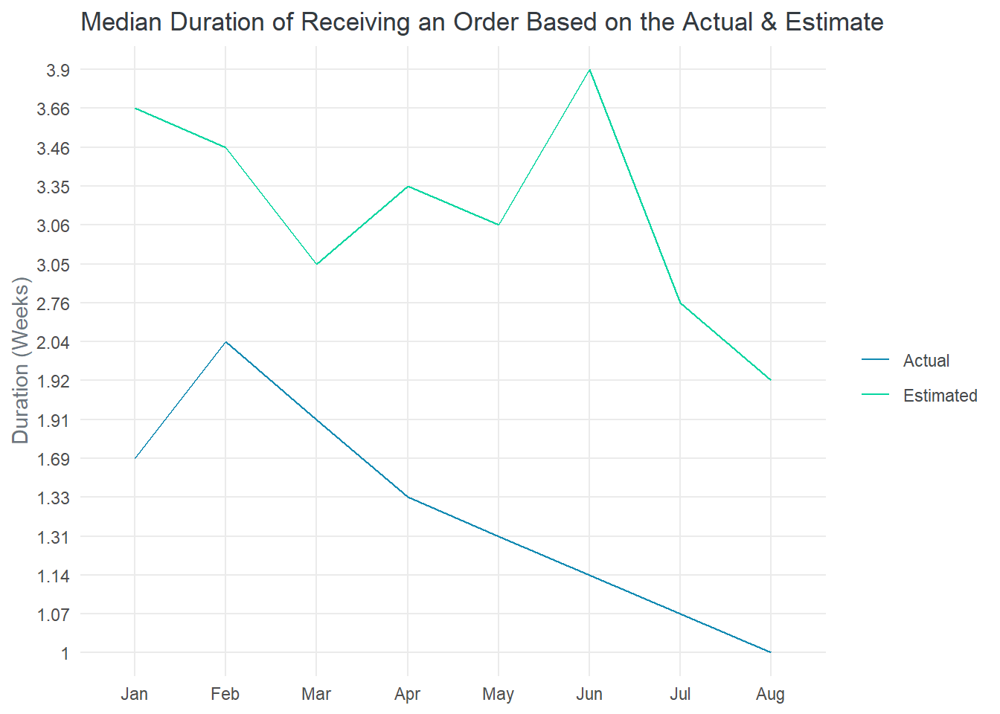
Approximately 97.6% of orders were estimated to take at least a week before being delivered to the customer. Offering a consistent estimated delivery time helps manage customer expectations and allows them to plan accordingly. However, when comparing the estimated duration to the actual delivery time, it is observed that the only (67%) of orders were delivered in a week or more, while a significant portion (30.74%) were delivered in a day or more.
The estimated delivery duration was generally longer than the actual delivery duration across all available months The average estimated duration was approximately 3 weeks, while the average actual duration was approximately 1 weeks. This indicates that the platform tended to provide customers with a more conservative estimated time frame for order delivery.
The analysis also identifies a significant decline in the actual delivery duration from February (2 weeks) to August (1 week) as against the estimated duration of which there was an expected increase from march (3 weeks) to June (4 weeks).
By further refining the estimation processes and closely monitoring actual delivery times, the online marketplace can align estimated and actual delivery duration more closely, ensuring accurate expectations and improved customer satisfaction.
temp <- orders |>
left_join(select(order_items, order_id, product_id), by = "order_id") |>
left_join(products, by = "product_id") |>
select(-c(product_category_name, product_name_lenght, product_description_lenght)) |>
select(order_purchase_timestamp,
order_delivered_customer_date,
product_weight_g, product_length_cm, product_height_cm, product_width_cm) |>
mutate(
time_diff = as.numeric(order_delivered_customer_date - order_purchase_timestamp),
duration = duration(time_diff, "hours") |> clean_duration()
) |>
separate(col = duration, into = c("value", "period"), sep = " ") |>
mutate(value = as.numeric(value),
period = factor(period, levels = period_levels))temp |>
select(product_weight_g, time_diff, value, period) |>
filter(!is.na(time_diff)) |>
ggplot(aes(x = product_weight_g, y = time_diff, color = period)) +
geom_point() +
scale_x_continuous(labels = scales::comma_format()) +
scale_y_continuous(labels = scales::comma_format()) +
scale_color_manual(values = c("#52B788", "#5B8E7D", "#BC4B51"), name = " ") +
labs(x = "Product Weight (grams)",
y = "Time Difference",
title = "Relationship between Product Weight and Order Duration") +
custom_theme()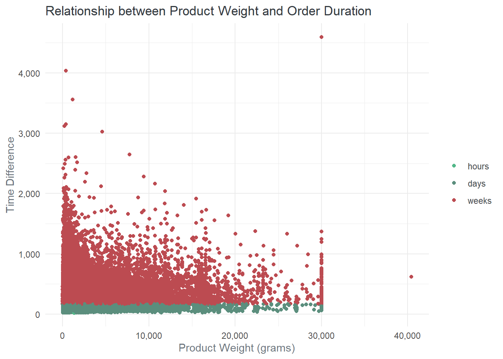
Pearson's product-moment correlation
data: product_weight_g and time_diff
t = 23.82, df = 60255, p-value < 2.2e-16
alternative hypothesis: true correlation is not equal to 0
95 percent confidence interval:
0.08867028 0.10449025
sample estimates:
cor
0.09658636 There is very low correlation coefficient of 0.09658636 between product weight and order duration. A correlation coefficient close to zero suggests that there is almost no linear relationship between these variables. In other words, the weight of the product does not have a significant impact on the duration it takes for the order to be delivered. This suggests that the online marketplace’s delivery operations are not strongly dependent on the weight of the products being delivered.
temp <- orders |>
left_join(select(order_items, order_id, seller_id), by = "order_id") |>
left_join(sellers, by = "seller_id") |>
select(order_purchase_timestamp,
order_delivered_customer_date,
seller_id, seller_city, seller_state) |>
mutate(
time_diff = as.numeric(order_delivered_customer_date - order_purchase_timestamp)
)temp |>
select(seller_id, time_diff) |>
filter(!is.na(time_diff)) |>
group_by(seller_id) |>
summarise(n_order = n(),
avg = mean(time_diff, na.rm = TRUE)) |>
mutate(duration = duration(avg, "hours") |> clean_duration()) |>
separate(col = duration, into = c("value", "period"), sep = " ") |>
mutate(value = as.numeric(value),
period = factor(period, levels = period_levels),
seller_id = str_trunc(seller_id, width = 10, "right")) |>
filter(period == "days", n_order > 1) |>
arrange(value) |>
head(10) |>
gt() |>
cols_label(seller_id = md("Seller **ID**"),
n_order = md("*No.* of Order"),
avg = "Average",
value = "Days") |>
cols_hide(period) |>
tab_header("Top Sellers Based on Average Order Duration") |>
fmt_number(avg)| Top Sellers Based on Average Order Duration | |||
| Seller ID | No. of Order | Average | Days |
|---|---|---|---|
| 96f7c79... | 3 | 46.71 | 1.95 |
| 751e274... | 2 | 47.94 | 2.00 |
| 99a25c3... | 6 | 53.54 | 2.23 |
| 26562f2... | 2 | 54.13 | 2.26 |
| 734def0... | 2 | 54.92 | 2.29 |
| 0af9776... | 2 | 60.97 | 2.54 |
| 8def3db... | 2 | 63.82 | 2.66 |
| aa1eb17... | 3 | 68.09 | 2.84 |
| 53b0300... | 7 | 70.11 | 2.92 |
| 99cd942... | 2 | 72.31 | 3.01 |
By analyzing the average order duration of the top sellers on the platform, it becomes evident that these sellers consistently require more than 2 days, on average, to fulfill customer orders.
temp |>
left_join(bz_state_name, by = c("seller_state" = "code")) |>
filter(!is.na(time_diff)) |>
group_by(name) |>
summarise(n_order = n(),
avg = mean(time_diff, na.rm = TRUE)) |>
mutate(duration = duration(avg, "hours") |> clean_duration()) |>
separate(col = duration, into = c("value", "period"), sep = " ") |>
mutate(value = as.numeric(value),
period = factor(period, levels = period_levels)) |>
arrange(value) |>
ggplot(aes(x = value, y = fct_reorder(name, value) |> fct_rev())) +
geom_col(fill = colr$bar) +
labs(x = "Duration Weeks",
y = NULL,
title = "Average Order Duration by Sellers State") +
custom_theme()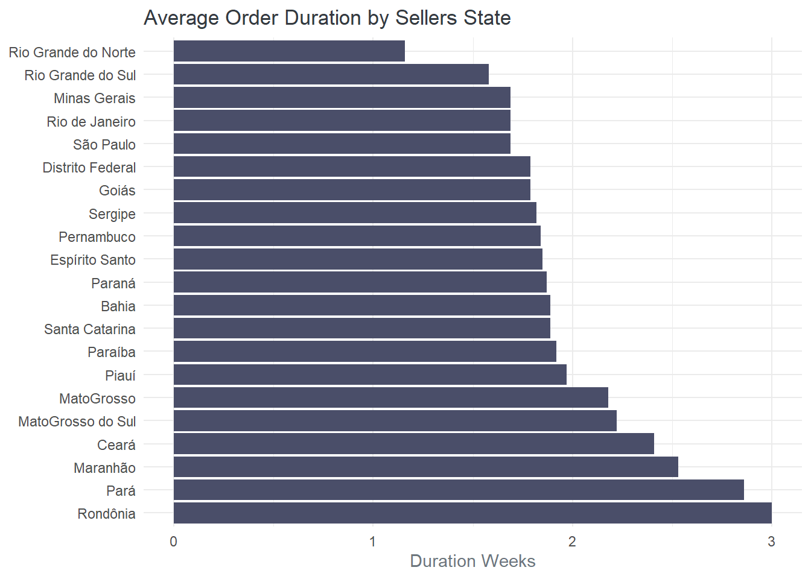
Among the analyzed states, sellers from Rio Grande do Norte have the lowest average order duration of approximately 1.16 weeks. On the other hand, sellers in Rondônia have the highest average order duration, with an average of 3 weeks.
temp |>
filter(!is.na(time_diff)) |>
group_by(seller_city) |>
summarise(n_order = n(),
avg = mean(time_diff, na.rm = TRUE)) |>
mutate(duration = duration(avg, "hours") |> clean_duration()) |>
separate(col = duration, into = c("value", "period"), sep = " ") |>
mutate(value = as.numeric(value),
period = factor(period, levels = period_levels),
seller_city = str_to_title(seller_city)) |>
arrange(value) |>
head(10) |>
gt() |>
cols_label(seller_city = "City",
n_order = md("*No.* Order"),
avg = "Average",
value = "Week") |>
cols_hide(period) |>
tab_header("Top Cities with the Lowest Average Order Duration") |>
fmt_number(avg) | Top Cities with the Lowest Average Order Duration | |||
| City | No. Order | Average | Week |
|---|---|---|---|
| Auriflama | 9 | 170.92 | 1.02 |
| Cordilheira Alta | 1 | 171.32 | 1.02 |
| Rio Claro | 83 | 170.91 | 1.02 |
| Braco Do Norte | 12 | 172.95 | 1.03 |
| Leme | 4 | 172.47 | 1.03 |
| Santa Barbara D Oeste | 8 | 172.51 | 1.03 |
| Concordia | 9 | 174.52 | 1.04 |
| Mandaguacu | 19 | 174.83 | 1.04 |
| Natal | 15 | 174.50 | 1.04 |
| Auriflama/Sp | 6 | 179.67 | 1.07 |
When examining the analysis by cities, it is observed that Auriflama, Cordilheira Alta, and Rio Claro have the lowest average order duration, each taking just 1.02 weeks. These cities stand out for their efficient order processing and delivery times. Sellers in these cities likely have optimized logistics, effective coordination with carriers, or streamlined operations, allowing them to fulfill orders promptly.
These findings emphasize regional variations in delivery efficiency and present an opportunity for the platform and sellers to share best practices, address challenges, and work towards improving order fulfillment times across different states and cities in Brazil.
The platform delivery analysis report provides valuable insights into various aspects of the delivery process. The report covers order duration, order status, order approval time, delivery to carriers, and delivery to customers. Here are the key highlights:
Order Duration:
The analysis reveals that the duration of order delivery to customers varied across different months. There was a positive decline in delivery duration over time, with the lowest median duration observed in August. However, a significant proportion of customers received their orders after a week, indicating room for improvement in reducing delivery times.
Order Status:
The majority of orders were successfully delivered to customers, reflecting a high success rate. However, a small percentage of orders were on transit or canceled, underscoring the importance of effective order tracking and proactive communication with customers regarding order status.
Order Approval Time:
The report indicates that most orders were approved within minutes of order initiation, while a small fraction took up to a week for approval. This highlights the need for efficient order approval processes to ensure timely order processing and enhance customer satisfaction.
Delivery to Carriers:
The analysis shows that a significant number of orders were delivered to carriers in days, followed by hours and minutes. This suggests the need for streamlined coordination with carriers to ensure smooth and efficient handover of orders for delivery.
Based on the analysis of the platform’s delivery process, here are some recommendations to enhance the overall delivery experience for customers:
Streamline Order Processing: Efforts should be made to further expedite the order approval process, aiming for faster approval times, particularly for orders that currently experience delays of up to a week. This can help reduce the overall order duration and improve customer satisfaction.
Enhance Carrier Coordination: Strengthen collaboration with carriers to optimize the delivery process. This includes improving communication channels, ensuring accurate tracking information, and exploring ways to reduce transit times and increase efficiency in order handover.